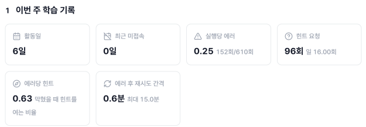
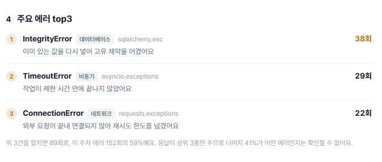
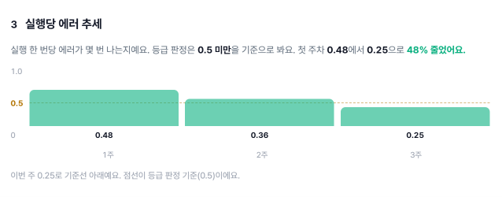
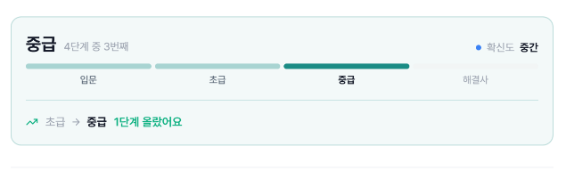

GOV-AI · 주간 진단 리포트
리포트의 숫자가 어느 수집기에서 오는지, 그리고 수준 등급을 무엇으로 판정할지.
주간 진단 리포트의 숫자는 GOV-AI 데이터레이크에서 옵니다. 그 안에 수집기가 둘 있는데, 이름만 보고는 어느 쪽이 무엇을 주는지 알 수 없습니다. 첫 절에서 그것을 가릅니다.
두 번째는 등급입니다. 판정을 LMS 가 자체적으로 하는 방향이라 입문 · 초급 · 중급 · 해결사 를 나누는 기준을 우리가 정해야 합니다. 관측치에 대 보니 쓸 수 있는 축은 둘이었고, 그 둘로 넷을 다 설명할 수 있었습니다. 근거를 화면 어디에 어떻게 보여줄지까지 적었습니다.
전제 하나. playlang · atmux 전용 엔드포인트는 직접 호출한 적이 없습니다.
문서화된 5개 API 밖이라 수집 대상에서 제외했기 때문입니다.
여기 적은 필드 구성은 /sync/students 응답에 블록으로 박혀 있던 것을 옮긴 것입니다.
실제 엔드포인트가 더 주는 값이 있을 수 있습니다.
| 수집기 | 주는 것 | 리포트에서 |
|---|---|---|
| playlang | 코드 실행 · 에러 · 힌트 카운트 | 지표 전부 |
| atmux | 실습 시간 · CPU 사용률 | 한 칸도 쓰지 않음 |
| LMS | 기수 시작일 · 계정 | 주차 번호 환산 · 학생 식별 |
atmux 는 쓰지 않는 것이 맞습니다. 오래 켜 두는 것과 잘 푸는 것은 다릅니다. 환경을 열어 두고 다른 일을 해도 시간은 쌓입니다.
LMS 는 지표를 주지 않습니다. 원천이 ISO 주차만 주므로 기수 주차로 바꾸는 데만 쓰입니다. 출결·과제·퀴즈는 LMS 에 있지만 리포트에 넣지 않았습니다.
playlang 이 주는 것은 카운트뿐입니다. 나머지는 주간 집계와 화면 계산에서 나옵니다.
| 리포트 항목 | playlang | 비고 |
|---|---|---|
| 1 이번 주 학습 기록 | ||
| 활동일 | 이벤트가 있는 날 | 주간 집계 |
| 최근 미접속 | 마지막 이벤트 시각 | 주간 집계 |
| 실행당 에러 | errors_count ÷ runs_count | 원천 값 |
| 힌트 요청 | hints_count | 원천 값 |
| 에러 후 재시도 간격 | 이벤트 간격 | 주간 집계 |
| 에러당 힌트 | hints_count ÷ errors_count | 화면이 계산 |
| 2~4 변화와 근거 | ||
| 지난주와 비교 | 두 주의 실행 · 힌트 · 활동일 | 화면이 델타 계산 |
| 실행당 에러 추세 | 주차별 error_rate_pct | 원천 값 |
| 주요 에러 top3 | 예외 이름 · 횟수 | 영역·설명은 화면이 붙임 |
| 5~8 해석과 제안 | ||
| 문제를 푸는 방식 | 두 주의 힌트 × 재시도 간격 | 화면이 문장 생성 |
| 잘하고 있는 점 | 두 주의 에러율 · 힌트 · 활동일 | 화면이 문장 생성 |
| 보완하면 좋은 점 | — | 원천 서술 그대로 |
| 이번 주 학습 제안 | 아래 표 | 화면이 문장 생성 |
| 요약 | ||
| 등급 · 확신도 | 위 지표를 판정에 넣음 | 원천 값 |

6일 · 최근 미접속 0일 은 집계,
152회/610회 는 errors_count·runs_count,
96회 는 hints_count,
0.6분 은 이벤트 간격.
에러당 힌트 0.63 만 화면이 나눈 값이다.

IntegrityError 38회 처럼.
영역 표기(데이터베이스 · 비동기 · 네트워크)와 한 줄 설명, 커버리지 59% 는 화면이 붙인다.
원천이 문장을 주지 않습니다. 지표가 조건에 걸릴 때만 그 지표로 문장을 만듭니다.
| 나오는 문장 | playlang |
|---|---|
| N일간 접속이 없었어요 | 마지막 이벤트 시각 |
| 실행 N회 중 M%에서 에러가 났어요 | errors_count · runs_count |
| 실행당 에러가 X→Y로 늘었어요 | 두 주의 error_rate_pct |
| 힌트를 하루 X→Y회로 더 열었어요 | 두 주의 hints_count |
| 다시 실행하기까지가 X→Y분으로 짧아졌어요 | 두 주의 이벤트 간격 |
| 학습한 날이 X→Y일로 줄었어요 | 두 주의 활동일 |
| 지금 방식을 이어가 보세요 | 어느 것도 안 걸림 |
0.9분 → 0.6분 만 조건에 걸려 제안이 한 줄이다.
두 주의 이벤트 간격을 견줘 화면이 만든다.
진단 리포트는 사실상 playlang 하나로 만들어집니다. 실습 플랫폼에 활동이 없는 주차는 리포트가 통째로 비고, 화면에 "기록이 수집되지 않았어요"로 나타납니다.
판정을 LMS 가 자체적으로 하는 방향입니다. 기준을 우리가 쥐고 있어야 왜 그 등급인지 학생에게 설명할 수 있습니다.
| 주차 | 에러율 | 힌트/일 | 재시도(분) | 활동일 | 판정 |
|---|---|---|---|---|---|
| 샘플 1주 | 0.48 | 14.0 | 1.2 | 3 | 입문 |
| 샘플 2주 | 0.36 | 17.6 | 0.9 | 5 | 초급 |
| 샘플 3주 | 0.25 | 16.0 | 0.6 | 6 | 중급 |
| 황수빈 W36 | 0.10 | 47.0 | 0.2 | 7 | 해결사 |
힌트는 등급과 관계가 없습니다. 해결사가 제일 많이 씁니다(47회/일). 어려운 것을 하고 있다는 뜻으로 읽힙니다.
재시도 간격은 짧을수록 높은 등급입니다. 1.2 → 0.2분. "원인 없이 다시 돌린다"가 아니라
익숙해서 빠르다는 신호였습니다.
등급과 같이 움직인 것은 에러율과 활동일 둘뿐입니다.
| 주차 | 주요 에러 top3 | 영역 |
|---|---|---|
| 1주 · 입문 | IndentationError TypeError NameError | 문법 · 타입 · 스코프 |
| 2주 · 초급 | ValueError TypeError KeyError | 값 · 자료구조 |
| 3주 · 중급 | IntegrityError TimeoutError ConnectionError | DB · 비동기 · 네트워크 |
| W36 · 해결사 | TimeoutError ConnectionError IntegrityError | 같음 |
에러의 양이 아니라 질이 등급을 말합니다. 원천의 판정 근거도 같은 것을 인용합니다 — "주요 에러 유형이 고급 백엔드 및 아키텍처 수준의 예외들에 집중되어 있어 해결사 역량을 보인다."
가로 — 무엇을 다루는가 주요 에러의 영역
세로 — 얼마나 잘 다루는가 실행당 에러율
문법·스코프 값·자료구조 데이터·DB 시스템·비동기
0.4 이상 입문 입문 초급 초급
0.2 ~ 0.4 입문 초급 중급 중급
0.2 미만 초급 중급 중급 해결사
| 관측 | 영역 | 에러율 | 격자 | 원천 판정 |
|---|---|---|---|---|
| 1주 | 문법·스코프 | 0.48 | 입문 | 입문 |
| 2주 | 값·자료구조 | 0.36 | 초급 | 초급 |
| 3주 | 시스템·비동기 | 0.25 | 중급 | 중급 |
| W36 | 시스템·비동기 | 0.10 | 해결사 | 해결사 |
넷이 다 맞습니다. 3주차와 W36 은 같은 열인데 등급이 갈립니다. 에러율 0.25 대 0.10 이 그 차이입니다. 두 축이 있어야 넷이 모두 설명됩니다.
주요 에러가 문법 · 타입 · 스코프 영역에 몰려 있고, 실행당 에러가 0.2 이상. 영역이 값·자료구조까지 올라와도 에러율이 0.4 이상이면 아직 입문입니다.
언어 문법을 아직 손에 익히는 단계입니다. IndentationError 는 들여쓰기,
NameError 는 오타나 스코프, TypeError 는 타입을 아직 의식하지 않는 상태입니다.
무엇을 만드느냐보다 어떻게 쓰느냐가 먼저인 구간입니다.
화면의 주요 에러 top3 가 이미 예외를 영역으로 나눕니다. 그 영역을 네 열로 묶기만 하면 됩니다.
| 격자 열 | 화면의 영역 | 예외 |
|---|---|---|
| 문법·스코프 | 문법 · 타입 · 스코프 | SyntaxError IndentationError NameError TypeError |
| 값·자료구조 | 값 · 자료구조 | ValueError KeyError IndexError AttributeError |
| 데이터·DB | 데이터검증 · 데이터베이스 | ValidationError IntegrityError |
| 시스템·비동기 | 네트워크 · 비동기 · 메모리 | ConnectionError TimeoutError MemoryError |
새로 만들 사전이 없습니다. 열의 값은 top3 중 가장 오른쪽 영역으로 잡습니다 — 그 주에 손댄 가장 어려운 것이 기준입니다.
데이터베이스 · 비동기 · 네트워크 가 가로축 값이다.
이 주차는 시스템·비동기 구간에 있다.

0.5 는 원천 서술에서 인용한 값이다.
우리가 정한 기준이 아니므로 LMS 판정으로 가면 다시 볼 항목이다.
관측 넷만으로는 가로축 하나로도 설명됩니다. 열이 오른쪽으로 갈수록 등급이 올라가니까요. 그래도 세로축을 두는 이유는, 같은 영역을 다루면서 에러가 잦은 경우를 열만으로는 해결사로 올려 보내기 때문입니다. 3주차와 W36 이 그 경우입니다.
남은 것은 세로축 경계 둘입니다. 위 격자는 0.4 · 0.2 로 잡았지만
관측치가 학생 두 명분이라 근거가 약합니다. 기수 하나가 끝나면 분포로 다시 잡습니다.
그때까지는 화면에 잠정 기준이라고 밝힙니다.
등급을 말한 직후에 근거가 와야 합니다.
[요약] 중급 · 확신도 중간 · 등급 변화 결론 [판정 근거] ← 신설 왜 그 등급인가 1 이번 주 학습 기록 지표 여섯 칸 2 지난주와 비교 3 실행당 에러 추세 ...

중급 · 4단계 중 3번째 와
초급 → 중급 1단계 올랐어요 까지만 있고, 왜 중급인지가 없습니다.
판정 근거 다루는 영역 데이터베이스 · 비동기 · 네트워크 실행당 에러 0.25 ────── 0.4 ────── 시스템·비동기 영역의 에러를 다루면서 실행당 에러가 0.4 아래입니다. 0.2 아래로 내려가면 해결사입니다.
마지막 줄이 핵심입니다. 다음 등급까지 무엇이 남았는지를 말해 주면 근거가 목표가 됩니다. 축만 나열하면 학생이 다시 해석해야 합니다.
축이 둘이라 짧습니다. 네 축을 눈금 넷으로 늘어놓으면 학생이 종합 방법을 다시 물어야 합니다. 영역 한 줄 · 에러율 한 줄이면 격자 위 어디인지가 그대로 보입니다.
원천은 이미 판정 근거를 문장으로 줍니다(grade_rationale).
계약에 넣기만 하면 기준표 없이도 오늘 바로 그 자리를 채울 수 있습니다.
다만 그 문장이 단계를 인용합니다. "10단계를 완주하여 해결사의 진도 기준을 충족" 같은 식입니다.
화면에서 진행 단계를 뺐는데 근거에만 단계가 나오면 학생이 볼 수 없는 단위로 설명하는 셈입니다. 그대로 실으려면 단계 정의를 먼저 받아야 합니다.
| 안 | 필요한 것 | 판단 |
|---|---|---|
| 2축 표기 | 에러율 경계 하나 | 이쪽으로 간다. 영역은 화면에 이미 있다 |
| 원천 서술 | 단계 정의 — 문장이 단계를 인용한다 | 우리 등급과 원천 서술이 어긋날 수 있어 맞지 않는다 |
LMS 가 등급을 매기면 근거도 LMS 것이어야 합니다. 우리 기준으로 중급을 준 옆에 원천이 쓴 "해결사의 진도 기준을 충족" 이 붙으면 학생이 어느 쪽을 믿을지 알 수 없습니다.
① 에러 영역을 등급 축으로 확정한다
└ 예외 → 영역 사전은 화면에 이미 있다. 영역 → 열 묶음만 정하면 된다
② 에러율 경계를 잠정으로 잡는다
└ 0.4 · 0.2. 근거가 약하므로 화면에 "잠정 기준" 표기
③ 원천 등급과 대조한다
└ 참고값. 크게 어긋나면 경계를 손본다
④ 기수 하나가 끝나면 분포로 경계를 다시 잡는다
①은 오늘 할 수 있습니다. 원천에서 무언가를 더 받아야 시작되는 일이 아닙니다. 막히는 것은 ②의 경계 하나뿐이고, 그것도 잠정으로 두면 화면은 완성됩니다.
| 구분 | 내용 | 상태 |
|---|---|---|
| 데이터 출처 | 진단 리포트 지표는 전부 playlang | 확인 |
| atmux | 시간·CPU 라 리포트에 쓰지 않음 | 의도된 미사용 |
| LMS | 기수 시작일 · 계정. 지표는 주지 않음 | 확인 |
| 등급 판정 | LMS 가 자체적으로. 원천 등급은 참고값 | 방향 확정 |
| 등급 축 | 에러 영역 × 에러율. 힌트·재시도는 무효 | 관측으로 확인 |
| 에러율 경계 | 0.4 · 0.2 잠정. 기수 분포로 재조정 | 정해야 함 |
| 근거 자리 | 요약과 「이번 주 학습 기록」 사이 · 두 줄 | 확정 |